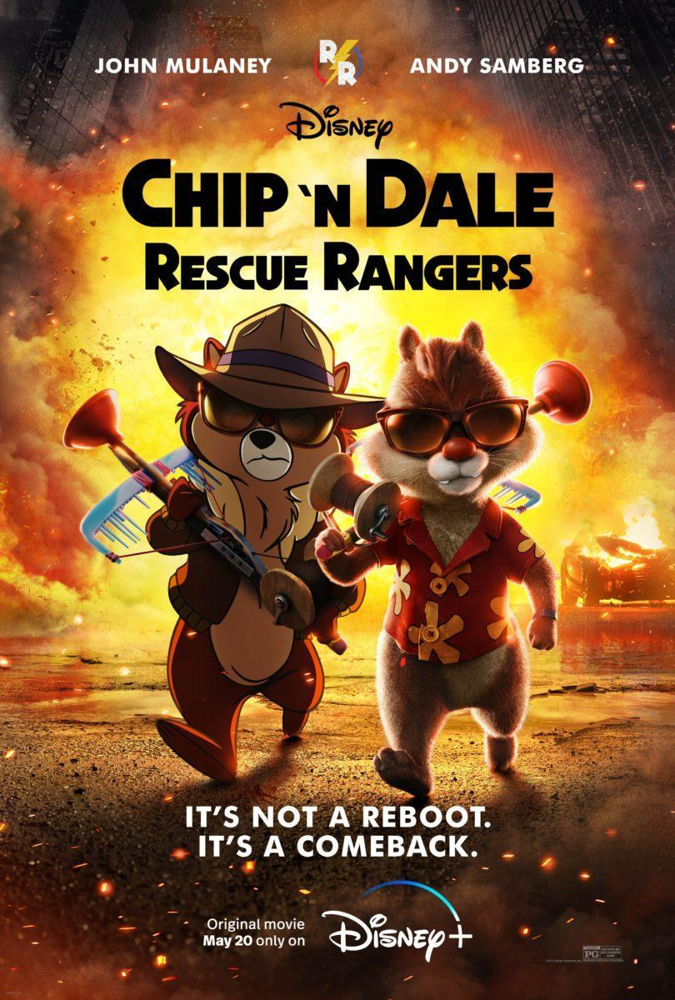

Chip 'n Dale: Rescue Rangers
Chip 'n Dale: Rescue Rangers
Chip ‘n Dale: Rescue Rangers, sinopsis
Amigos desde niños, Chip y Dale compartían el mismo sueño: ser comediantes famosos. Al crecer, y con mucho esfuerzo, lograron su sueño y llegaron a tenerlo todo, incluso su propio show de televisión, Rescue Rangers. Eran los reyes en la década de 1990, hasta que una ruptura los separó, el show fue cancelado y sus vidas se tornaron grises, alejados uno del otro. Tres décadas después, la pareja de ardillas se vuelven a unir para ayudar a un viejo amigo cuyas adicciones lo tienen endeudado y corre el peligro de ser pirateado Mientras tanto, los personajes animados tradicionalmente están luchando para llegar a fin de mes después de que la animación por computadora se convierta en la nueva normalidad. Ahora, Chip y Dale deben renovar su asociación para tratar de salvar a un amigo de ser víctima de la piratería de videos.
Chip ‘n Dale: el crossover más grande la historia
¿Recuerdan cuando decían que Avengers Endgame era el crossover más grande de la historia. Bueno, pues la cantidad de personajes que salen en ella palidecen en comparación a todos los que aparecen en esta historia, de Disney o externos. en ese sentido Chip ‘n Dale son herederas directas de Roger Rabbit, quien por cierto también aparece en la película. Más que apelar a la nostalgia, la película es un homenaje a todas y cada una de las series que conquistaron la televisión en la década de los 90, incluso hay una aparición especial de Paula Abdul y su gato bailarín, MC Skat Kat. A lo largo de la película podemos ver a Baloo de El libro de la Selva, Sailor Moon, Lumiere de La bella y la bestia, Flounder de La sirenita, Rico McPato, Pumba, Aladino, Las ponys de My Little Pony, algunos automóviles de Cars y el pato Darwing.
Chip y Dale
En la década de los 90, Disney apostó por hacer algunas series animadas de buena calidad, con historias muy entretenidas que te dejan enganchado a la pantalla todos los días para conocer qué seguía de la historia. En este paquete animado llegó a nosotros Las Pato Aventuras, Pato Darkwing, Aventureros del Aire, Los Osos Gummi, Gárgolas y Chip ‘n Dale: Rescue Rangers, que para muchos era el favorito, ya fuera porque las aventuras eran más acordes a nuestra edad o porque ya les habíamos agarrado cariño de los episodios animados donde los vimos enfrentarse al Pato Donald.